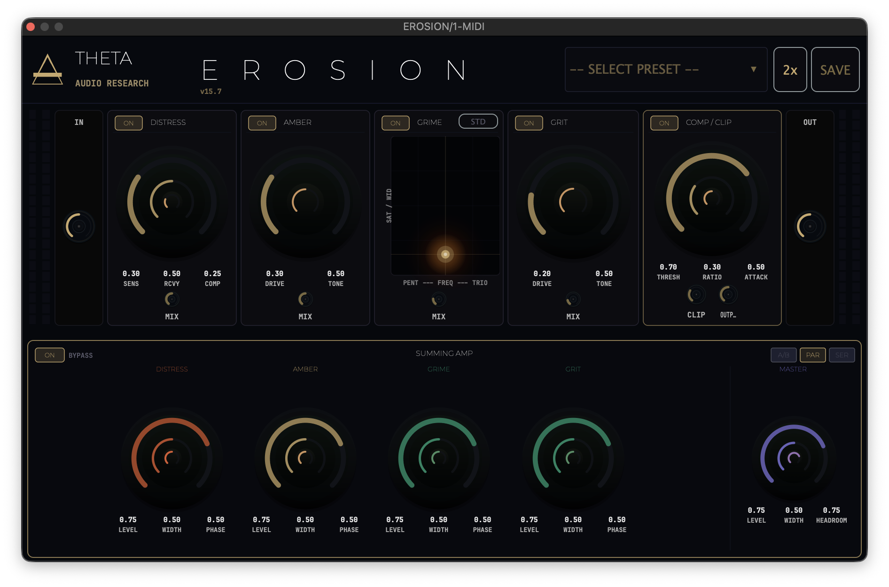

EROSION treats degradation as a physical process. Built around four distinct analog circuit models, it provides a flexible routing architecture paired with a performance-grade XY control surface. Instead of offering disconnected modules, EROSION treats saturation as a coherent signal environment. The engine covers the full spectrum of nonlinear transformation—from invisible germanium warmth to aggressive vacuum tube destruction.
Authorization includes VST3/AU formats, 48kHz internal oversampling, and Factory Presets.
INITIALIZE_ACQUISITION // $49.99SYSTEM_ARCHITECTURE
THE SYSTEM
EROSION is a nonlinear signal environment built around four distinct analog modeling engines: DISTRESS, AMBER, GRIME, and GRIT. It treats saturation not as a simple effect, but as a physical process of material degradation. The internal routing architecture allows the four voices to be deployed in Series for compound transformation, an A/B Split for parallel balancing, or full Parallel Summing with independent phase control.
INTERFACE
Following the THETA Void design language, the EROSION interface is a focused research terminal utilizing flat rendering and scientific telemetry. Control is anchored by a dual-concentric knob architecture with brightness-graded value arcs, providing immediate visual feedback of signal stress. The primary interaction surface is the multi-functional GRIME XY Heat Pad, designed for performance-grade control over tube character and the associated performance buffers.
ANALOG MODELS [STAGES 1 & 2]
DISTRESS [GERMANIUM] is a transistor compressor-saturator model featuring asymmetric clipping and unpredictable harmonic crunch, ideal for adding "hair" and instability to transients. AMBER [TAPE] provides frequency-dependent tape saturation, utilizing a tilt-weighted model to simulate the tonal softening and compression characteristics of vintage transport paths.
ANALOG MODELS [STAGES 3 & 4]
GRIME [TUBE] is a three-path vacuum tube simulation allowing users to move between Pentode, Triode, and 12AT7 topologies. It is the most reactive stage in the engine, responding dynamically to input gain and XY positioning. GRIT [TANH] acts as the final clinical stage, utilizing a high-precision Tanh soft-clipping model to add a clean edge and harmonic density.
XY PERFORMANCE
Beyond pure saturation, EROSION includes three performance-driven buffers mapped to the XY movement: Grain Scatter utilizes micro-granular time-shifting to create harmonic smear; Stutter Gate applies physical drag-velocity rhythm, chopping the signal based on speed of interaction; and Feedback Smear introduces a resonant comb filter that feeds directly back into the tube stages.
CORE_LOGIC
- Routing Modes Series, A/B Split, and Parallel Summing with Phase Inv.
- Oversampling Selectable 2x / 4x / 8x High-Definition Linear Phase.
- Performance Buffer XY-driven Grain Scatter and Stutter Gate logic.
- Output Wall Composite Tanh Clipper + Brick-wall Safety Limiter.
TELEMETRY
- Architecture macOS [AU / VST3] // 64-bit
- Interface THETA Void [Flat Vector Styling / Arced Value Readouts]
- Input/Output Level-matched signal path with global bypass.
- Developer THETA Audio Research // 2026